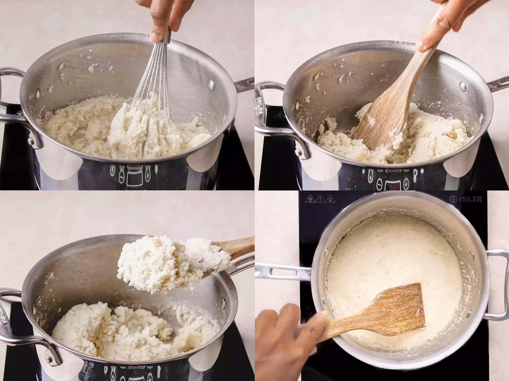

Ugali with Sukuma Wiki
Ugali with Sukuma Wiki is one of the most
iconic Kenyan meals, enjoyed across the country as a daily staple.
Ugali is a simple stiff maize flour porridge, while Sukuma Wiki
(collard greens) are sautéed with onions and tomatoes.
This affordable, nutritious dish is filling and easy to prepare.
Recipe Information
Preparation Time: 10 minutes
Cooking Time: 25 minutes
Servings: 4 people
Difficulty Level: Beginner
Ingredients
- 2 cups maize flour (Cornmeal)
- 4 cups water
- 1 bunch Sukuma Wiki (collard greens), chopped
- 2 medium tomatoes, diced
- 1 large onion, finely chopped
- 2 tablespoons cooking oil
- 1 tablespoon salt
- Optional: 1 chilli pepper for extra heat
Instructions
- In a large pot, bring the water to a boil and add a pinch of salt.
- Gradually add the maize flour while stirring with a wooden spoon to avoid lumps.
- Continue stirring until the mixture thickens into a firm, smooth dough-like consistency (Ugali). Cover and set aside.
- In a pan, heat oil and sauté onions until golden brown.
- Add tomatoes (and chili if using), cook until soft then add Sukuma Wiki.
- Stir, season with salt and cook for 5–7 minutes until tender but still green.
- Serve the Sukuma Wiki hot with slices of Ugali.
Meal Preview


Tips
For softer Ugali, add a little more water.
For a richer Sukuma Wiki flavor, you can add beef, chicken, or vegetable broth while cooking the greens
Nutition Facts (Per Serving)
- Calories: 320kcal
- Carbohydrates: 60g
- Protein: 8g
- Fat: 6g
- Fiber: 5g